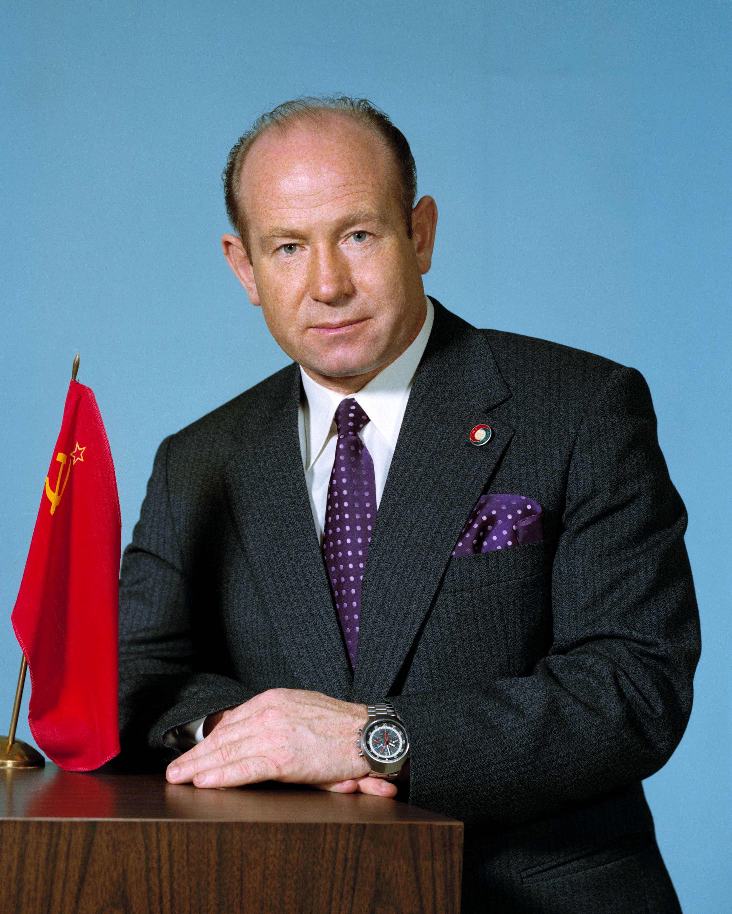
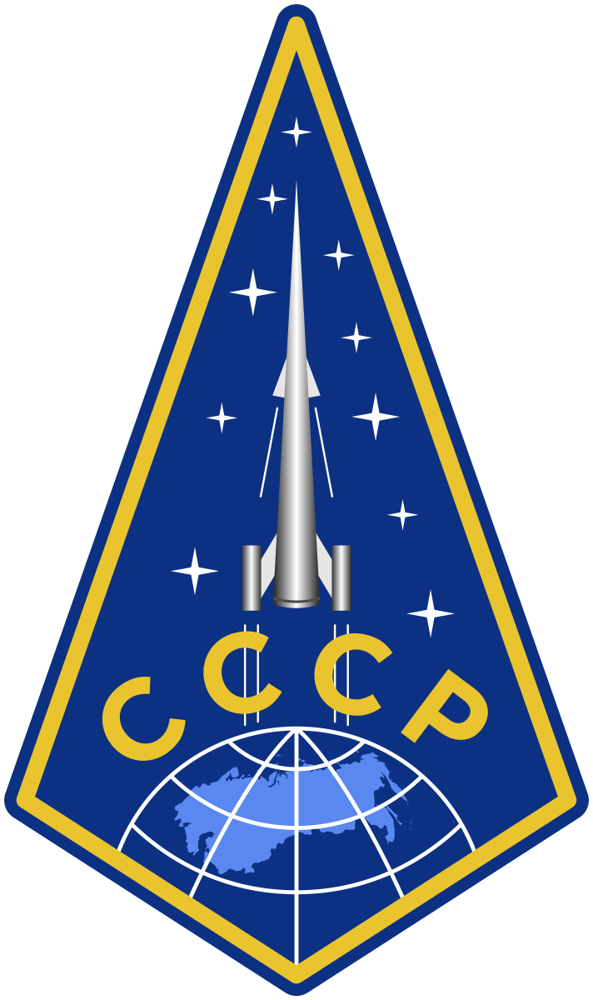

อะเลคเซย์ เลโอนอฟ
 อะเลคเซย์ เลโอนอฟ ในเดือนเมษายน ค.ศ. 1974| เกิด | 30 พฤษภาคม ค.ศ. 1934 ลีสต์เวียนคา, ดินแดนไซบีเรียตะวันตก, สาธารณรัฐรัสเซีย, สหภาพโซเวียต |
|---|---|
| เสียชีวิต | 11 ตุลาคม ค.ศ. 2019 (85 ปี) มอสโก, รัสเซีย |
| สุสาน | สุสานทหารแห่งสหพันธรัฐ, แคว้นมอสโก |
| อาชีพ | นักบินรบ, นักบินอวกาศ |
| รางวัล | วีรชนแห่งสหภาพโซเวียต (สองครั้ง) | อาชีพในอวกาศ |
| นักบินอวกาศโซเวียต | |
| ยศ | พลอากาศตรี, กองทัพอากาศโซเวียต |
| เวลาในอวกาศ | 7 วัน 33 นาที 2 วินาที |
| การคัดเลือก | กลุ่มกองทัพอากาศที่ 1 |
| ปฏิบัติการนอกยาน | 1 |
| เวลาปฏิบัติการนอกยาน | 12 นาที, 9 วินาที |
| ภารกิจ | วอสฮอด 2, โซยุซ 19 (โครงการทดสอบโซยุซ–อะพอลโล) |
| เครื่องหมายภารกิจ |  |
| ลายมือชื่อ | |
อะเลคเซย์ อาร์ฮีโปวิช เลโอนอฟ (รัสเซีย: Алексе́й Архи́пович Лео́нов; 30 พฤษภาคม ค.ศ. 1934 – 11 ตุลาคม ค.ศ. 2019) เป็นนักบินอวกาศ ทหารอากาศยศพลอากาศตรี นักเขียนและศิลปินชาวโซเวียตและรัสเซีย ในวันที่ 18 มีนาคม ค.ศ. 1965 เขาเป็นบุคคลแรกที่กระทำการเดินอวกาศ ด้วยออกจากแคปซูลในภารกิจวอสฮอด 2 เป็นเวลา 12 นาที 9 วินาที เขาได้รับคัดเลือกให้เป็นพลเมืองโซเวียตคนแรกในโครงการลงจอดมนุษย์บนดวงจันทร์ แต่ถึงกระนั้นโครงการได้ถูกยกเลิกไป
ในเดือนกรกฎาคม ค.ศ. 1975 เลโอนอฟเป็นผู้บัญชาการยานอวกาศโซยุซในภารกิจอะพอลโล–โซยุซ ซึ่งเชื่อมต่อกับยานอวกาศอะพอลโลของสหรัฐในอวกาศเป็นเวลา 2 วัน
วัยเยาว์และการรับราชการทหาร
เลโอนอฟเกิดที่เมืองลีสต์เวียนคา ในดินแดนไซบีเรียตะวันตก สาธารณรัฐรัสเซีย ในวันที่ 30 พฤษภาคม ค.ศ. 1934 อะเลคเซย์เป็นบุตรระหว่างเยฟโดเคีย (สกุลเดิม: ซอตนิโควา) กับอาร์คฮิป เลโอนอฟ เขาเป็นบุตรคนที่แปดจากบุตรเก้าคนที่รอดชีวิต บิดาของเขาเป็นช่างไฟฟ้าและคนงานเหมือง
ใน ค.ศ. 1936 บิดาของเขาถูกจับกุมและประกาศว่าเป็น "ศัตรูแห่งประชาชน" เลโอนอฟเขียนในอัตชีวประวัติของเขาว่า: "เขาไม่ได้ถูกจับเพียงคนเดียว: ผู้อื่นอีกมากก็ถูกจับ มันเป็นส่วนหนึ่งของมโนธรรมที่ถูกสร้างขึ้นโดยผู้มีอำนาจเพื่อกำจัดใครก็ตามที่แสดงบุคลิกที่เป็นอิสระหรือแข็งแกร่งเกินไป เหตุการณ์นี้เกิดในช่วงของการกวาดล้างของสตาลิน หลายคนหายตัวไปในกูลักและไม่เคยกลับมาอีกเลย" ครอบครัวของเลโอนอฟย้ายไปอยู่ที่เมืองเคเมโรโว บิดาของเขากลับมาอยู่ที่เคเมโรโวหลังจากที่เขาถูกปล่อยตัว เขาได้รับการชดเชยจากการถูกกักขังโดยมิชอบ เลโอนอฟใช้งานศิลปะเป็นช่องทางในการหาเลี้ยงครอบครัวเพิ่มเติม เขาเริ่มอาชีพศิลปินโดยการวาดลายดอกไม้บนเตาอบ และในภายหลังเขาวาดทิวทัศน์ลงบนผ้าใบ
รัฐบาลโซเวียตสนับสนุนในพลเมืองย้ายถิ่นฐานไปยังดินแดนปรัสเซียที่ถูกยิดครองโดยสหภาพโซเวียต ด้วยเหตุนั้น ใน ค.ศ. 1948 ครอบครัวของเขาย้ายไปยังเมืองคาลีนินกราด เลโอนอฟสำเร็จการศึกษาจากโรงเรียนมัธยมศึกษาหมายเลข 21 ใน ค.ศ. 1953 เขาสมัครเข้าสู่สถาบันศิลปะในรีกา, สาธารณรัฐลัตเวีย แต่ตัดสินใจไม่เข้าเรียนเนื่องจากค่าเล่าเรียนสูง เลโอนอฟตัดสินใจเข้าร่วมโรงเรียนเตรียมการบินของยูเครนในเครเมนชุก เขาบินด้วยตนเองครั้งแรกในเดือนพฤษภาคม ค.ศ. 1955 พร้อมกับไล่ตามความชอบในศิลปะโดยการศึกษานอกเวลาในริกา เลโอนอฟเริ่มหลักสูตรการบินขั้นสูงสองปีเพื่อจะเป็นนักบินขับไล่ที่โรงเรียนทหารอากาศขั้นสูงชูกูเอฟในสาธารณรัฐยูเครน
ในวันที่ 30 ตุลาคม ค.ศ. 1957 เลโอนอฟสำเร็จการศึกษา ได้รับปริญญาเกียรตินิยม และได้รับการแต่งตั้งเป็นร้อยโทในกรมทหารพลร่มที่ 113 ซึ่งเป็นส่วนหนึ่งของกองพลวิศวกรรมการบินที่ 10 กองทัพอากาศภาคที่ 69 ในเคียฟ ในวันที่ 13 ธันวาคม ค.ศ. 1959 เขาสมรสกับสเวตลานา ปาฟลอฟนา โดเซนโค หนึ่งวันก่อนที่เขาจะย้ายไปเยอรมันตะวันออกหลังจากเขาถูกแต่งตั้งให้ไปยังกรมลาดตระเวนที่ 294 กองทัพอากาศภาคที่ 16
โครงการอวกาศโซเวียต
เขาเป็นหนึ่งในนักบิน 20 คนของกองทัพอากาศโซเวียตซึ่งถูกคัดเลือกให้เป็นส่วนหนึ่งของกลุ่มฝึกซ้อมนักบินอวกาศชุดแรกใน ค.ศ. 1960 เหมือนกับนักบินอวกาศส่วนใหญ่ เลโอนอฟเป็นสมาชิกพรรคคอมมิวนิสต์แห่งสหภาพโซเวียต การเดินอวกาศของเขาแรกเริ่มแล้วถูกวางแผนไว้สำหรับภารกิจวอสฮอด 1 แต่ได้มีการเปลี่ยนแผน เหตุการณ์ทางประวัติศาสตร์นี้จึงเกิดขึ้นในภารกิจวอสฮอด 2แทน ในวันที่ 18 มีนาคม ค.ศ. 1965 เขาออกไปภายนอกยานอวกาศเป็นเวลา 12 นาที และ 9 วินาที โดยตัวเขาเชื่อมต่อกับยานอวกาศด้วยสายเชื่อมยาว 4.8-เมตร (16-ฟุต) ในช่วงปลายของการเดินอวกาศ ชุดอวกาศของเลโอนอฟได้บวมขึ้นจากสภาพสูญญากาศของอวกาศจนถึงระดับที่เขาไม่สามารถกลับเข้ายานอวกาศผ่านประตูกักอากาศได้ เขาเปิดวาล์วเพื่อลดแรงดันภายในชุดอวกาศและสามารถกลับเข้าไปในยานอวกาศได้อย่างยากลำบาก ขณะดำเนินภารกิจ เลโอนอฟได้ร่างภาพดวงอาทิตย์ขึ้นจากวงโคจร เป็นงานศิลปะชิ้นแรกที่ถูกสร้างขึ้นในอวกาศ เลโอนอฟใช้เวลาสิบแปดเดือนในการฝึกซ้อมสภาพไร้แรงโน้มถ่วงเป็นสำหรับภารกิจนี้
ใน ค.ศ. 1968 เลโอนอฟได้รับคัดเลือกให้เป็นผู้บัญชาการภารกิจโซยุซ 7K-L1 ในการบินรอบดวงจันทร์ ภารกิจนี้ถูกยกเลิกเพราะความล่าช้าในการทำการบินรอบดวงจันทร์ที่เชื่อถือได้ (ภารกิจซอนด์ 7และซอนด์ 8 เป็นเพียงสองภารกิจในโครงการบินรอบดวงจันทร์ที่ประสบความสำเร็จ) และภารกิจอะพอลโล 8ได้ประสบความสำเร็จในก้าวนั้นในการการแข่งขันอวกาศไปก่อนแล้ว เขายังได้รับคัดเลือกให้เป็นพลเมืองโซเวียตคนแรกที่จะลงจอดบนดวงจันทร์ บนยานอวกาศLOK/N1 แต่ภารกิจนี้ก็ถูกยกเลิกเช่นกัน (การออกแบบจำเป็นที่จะต้องมีการเดินอวกาศระหว่างยาน ซึ่งเป็นส่วนหนึ่งที่ทำให้เขาได้รับคัดเลือก) เลโอนอฟได้รับมอบหมายให้เป็นผู้บัญชาการของภารกิจโซยุซ 11ใน ค.ศ. 1971 ไปยังสถานีอวกาศซัลยุท 1 สถานีอวกาศแห่งแรก แต่ชุดลูกเรือของเขาถูกสลับกับชุดสำรองหลังจากหนึ่งในสมาชิกนักบินอวกาศ วาเลริ คูบาซอฟถูกสงสัยว่าจะติดเชื้อวัณโรค
เลโอนอฟได้รับแต่งตั้งให้บัญชาการภารกิจไปยังสถานีอวกาศซัลยุท 1 แต่แผนนี้ถูกยกเลิกหลังจากการเสียชีวิตขิงลูกเรือภารกิจโซยุซ 11 และสถานีอวกาศก็ไม่สามารถกู้คืนกลับมาได้ สถานีอวกาศทั้งสองที่ถูกปล่อยตามมานั้นถูกทำลายในการปล่อยหรือล้มเหลวไม่นานหลังจากนั้น การลูกเรือของเลโอนอฟพร้อมสำหรับภารกิจต่อไป แต่เมื่อสถานีอวกาศซัลยุท 4ถูกปล่อยสู่วงโคจรสำเร็จ เลโอนอฟก็ถูกย้ายไปยังโครงการที่มีความสำคัญมากกว่านั้นแล้ว
การเดินทางสู่อวกาศครั้งที่สองของเลโอนอฟ เขาไปในฐานะผู้บัญชาการยานอวกาศโซยุซ 19ซึ่งเป็นฝั่งของโซเวียตในโครงการทดสอบอะพอลโล–โซยุซในปี ค.ศ. 1975 ซึ่งเป็นภารกิจอวกาศร่วมระหว่างสหภาพโซเวียตและสหรัฐอเมริกาเป็นครั้งแรก ระหว่างโครงการ เลโอนอฟได้เป็นเพื่อนกับผู้บังคับบัญชาฝั่งสหรัฐ โทมัส แพตเทน สแตฟฟอร์ด โดยเลโอนอฟได้เป็นบิดาทูนหัวของบุตรของสแตฟฟอร์ด สแตฟฟอร์ดได้กล่างบทสรรเสริญเป็นภาษารัสเซียในงานศพของเลโอนอฟในเดือนตุลาคม ค.ศ. 2019
ระหว่าง ค.ศ. 1976 ถึง ค.ศ. 1982 เลโอนอฟเป็นผู้บัญชาการของคณะนักบินอวกาศ ("หัวหน้านักบินอวกาศ") และเป็นรองผู้อำนวยการศูนย์ฝึกซ้อมนักบินอวกาศยูรี กาการิน ที่ซึ่งเขาดูแลการฝึกซ้อมของนักบินอวกาศ เขายังเป็นบรรณาธิการหนังสือพิมพ์นักบินอวกาศเนปจูน เขาเกษียณอายุใน ค.ศ. 1992
ระเบียงภาพ